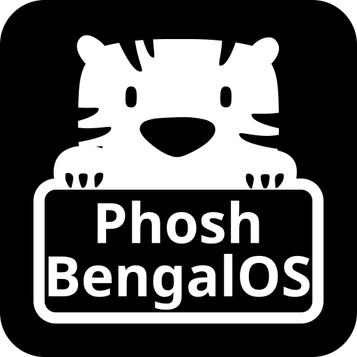

Immutable Images
A/B updates · safer upgrades
A/B updates · safer upgrades
Immutable BengalOS images provide atomic A/B updates and are designed for a phone-like upgrade experience.

BengalOS provides immutable and mutable images for Phosh's nightly package builds. The immutable variants support A/B updates and are thus safe to upgrade and give a more phone-like upgrade experience.
All of BengalOS is currently experimental, we might make incompatible changes at any time.
Immutable BengalOS images provide atomic A/B updates and are designed for a phone-like upgrade experience.
Mutable images behave like a traditional Linux system and are easier to customize and modify locally.
See the project README for installation instructions on how to build your own images.
The community is centered around the BengalOS Matrix room. For issues and feature requests, please use the issue tracker.
BengalOS follows Phosh's Code of Conduct. Please follow a respectful and civilized communication style when interacting with community members on Matrix and bug trackers.
You can support our work with a one-time or recurring donation.
If you want to support us continuously, you can become a supporting member or support us via GitHub Sponsors .